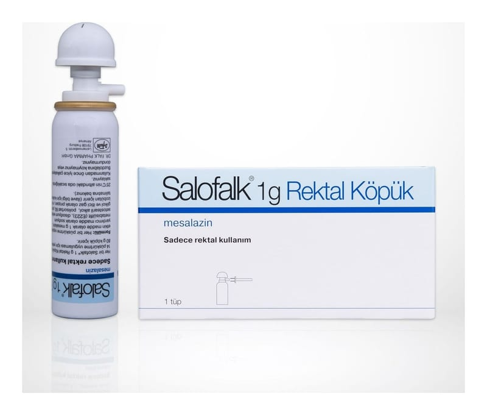

Salofalk 1 g Rektal Köpük, 14 Adet

Ne için kullanılır
KT · Bölüm 1SALOFALK®’ın etkin maddesi mesalazin olup, her bir uygulama 1 g etkin madde içermektedir. SALOFALK®, grimsi beyaz veya kırmızımsı eflatun renkli kremsi dolgun köpüktür.
SALOFALK®, “aminosalisilik asit ve benzeri ilaçlar” diye adlandırılan ve “intestinal antiinflamatuvar” grubuna dahil bir ilaçtır. Bu ilaçlar inflamatuvar bağırsak hastalıklarını tedavi etmek için kullanılırlar. SALOFALK®, karton kutu içinde 1 adet alüminyum sprey tüp ve 14 adet aplikatörden oluşmaktadır. Her bir tüp 14 uygulama (7 doza eşdeğer) için yeterli 80 g köpük içerir. SALOFALK®aşağıdaki durumun tedavisinde kullanılır:
• Doktorlar tarafından ülseratif kolit olarak bilinen, kalın bağırsağın (kolon) ve rektumun (dışkı bölgesindeki yol) iltihaplanmasında.